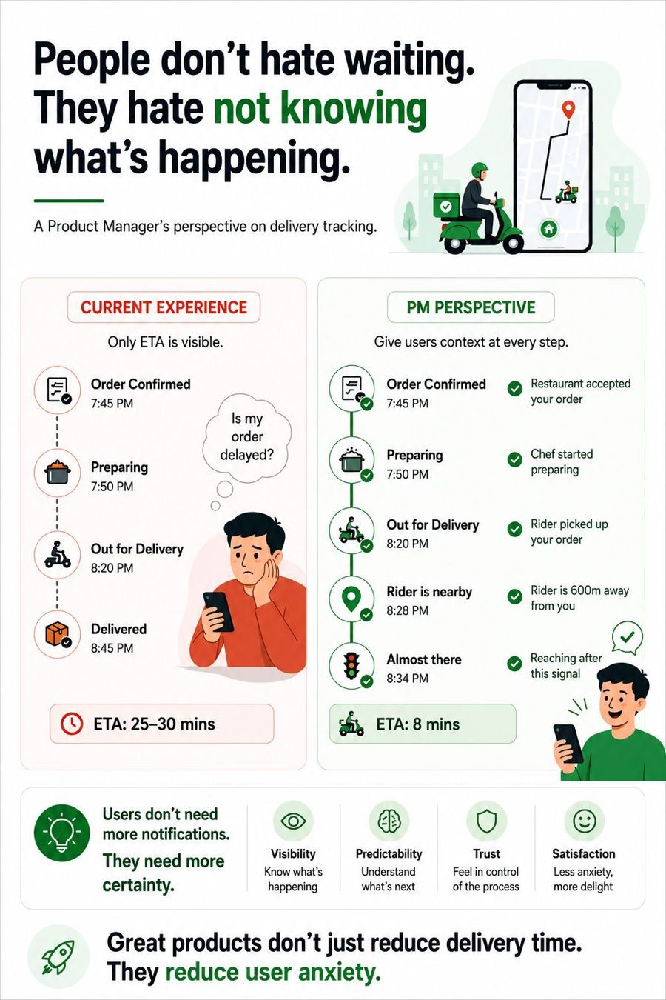

Good products solve problems. Great products solve uncertainty. Users don’t judge a product only by what it does. They judge it by how confident it makes them feel while using it. Some of the most valuable product improvements aren’t new features. They’re moments of clarity.
Read more